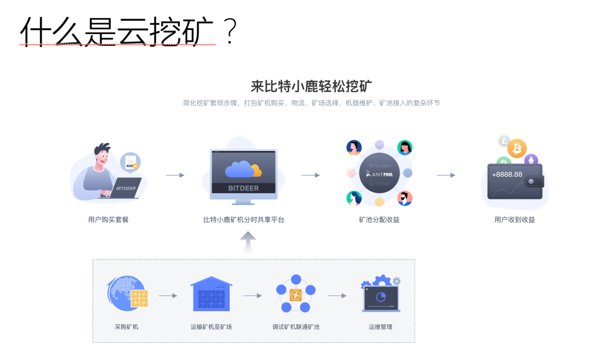
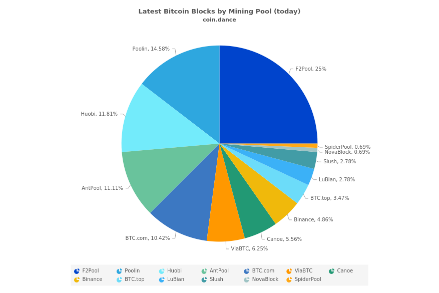
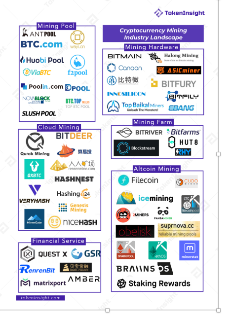
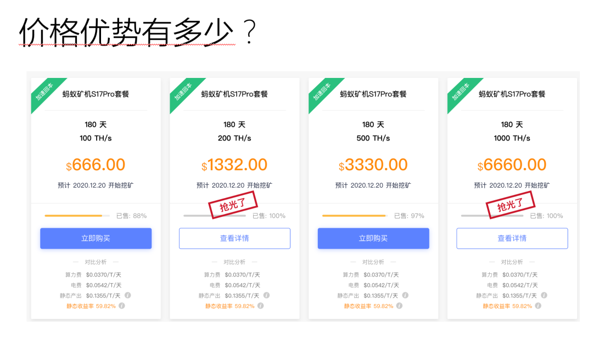
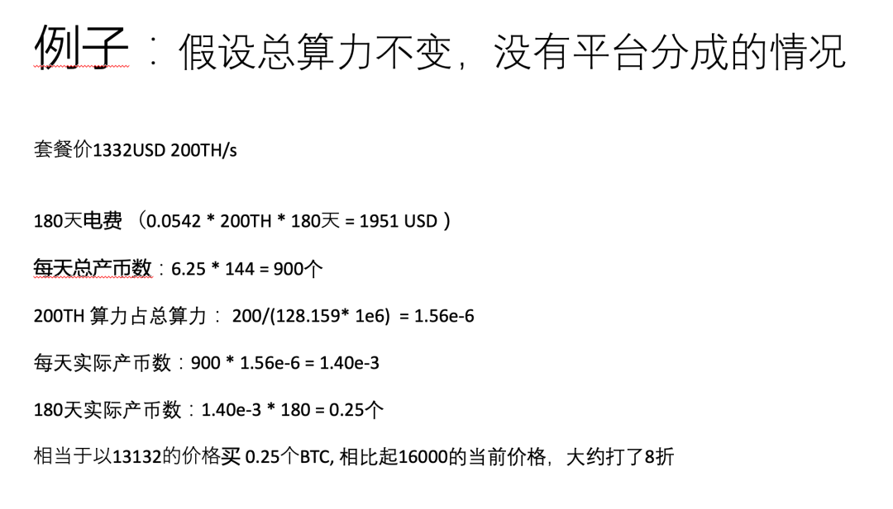
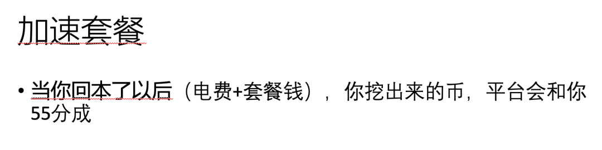
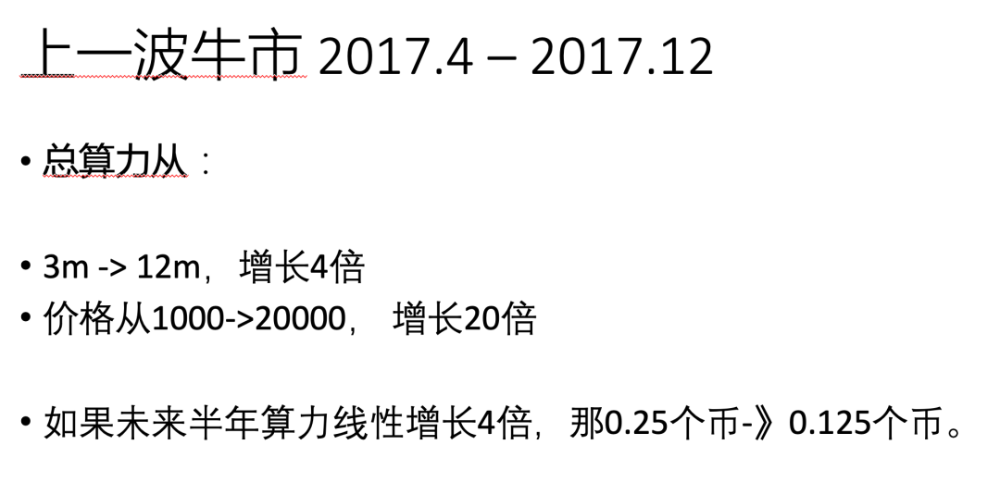
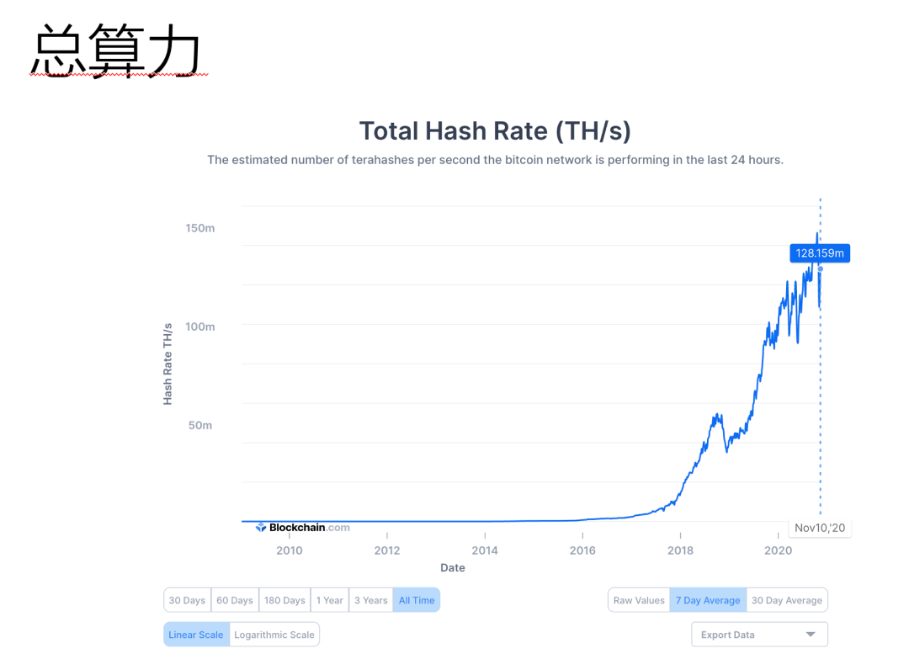
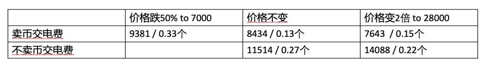

--------点击蓝字关注我--------
微信号：gaoxiaomao88
--------点击蓝字关注我--------
微信号：gaoxiaomao88
今天这篇是来自于我最近给投资群群友做的一次分享。
因为分享用的是ppt，所以我就主要重用ppt里的内容，加上一些对于ppt的解说来成文了。

首先我想聊的是，什么是云挖矿？
或者说在云挖矿之前，可能我需要简单介绍一下什么是比特币的挖矿。
所谓的比特币的挖矿，其实源于比特币账本一种特殊的结构：区块链结构。
这个区块链结构是用来做什么的呢？他是用来记录比特币的转账信息的。
每隔十分钟，就会有一个人被选中，由他来把区块链上过去十分钟的所有转账信息都记录下来。
这过去十分钟的转账信息被打成了一个块，就是所谓的“区块”。
而因为每隔十分钟就有一个块，每一个新的块都是基于上一个十分钟的块的信息来产生的，这些块就连成了一条链，就是所谓的区块链。
为了奖励这个把所有转账信息记录下来，生成区块的人，比特币会奖励给生成区块的人一定量的比特币。
目前区块的奖励为6.25个比特币。由于一天有144个十分钟，因此每天的奖励为6.25 * 144 = 900个比特币。
这么多的奖励，大家一定都想要，那到底谁可以拿到这个奖励呢？
比特币的设计者想了一个办法，每隔十分钟都让大家都来算一道很难的数学题。
这个数学题是随机生成的，而且只能用暴力求解。
谁先算出来给出答案，谁就可以负责记录区块，拿到奖励。
这样一来，算力越高的人，拿到这个奖励的几率越大。
由于这种单纯提供算力获得比特币奖励的方式很像是挖金矿，力气越大挖到的越多，而且还很随机，因此这种用算力来换取区块奖励的人也常常被人们叫做矿工，这种行为也通常被叫做挖矿。
由于每一个人提供的算力其实只能占全世界总算力的非常小的一个比例，所以其实如果一个人独立地提供算力来挖矿，很可能挖好几年也没法获得一次区块奖励。
后来大家就想出一个办法，很多人加入一个联盟，以整个联盟的形式来提供算力，然后一旦联盟中任何一个人得到区块奖励，所有联盟里的人根据提供算力的比例来领取区块奖励。
这个联盟通常被称为矿池。
引自百度百科：截止2019年1月，全球算力排名前五的比特币矿池有：BTC.com 、Poolin、AntPool、slush pool、、F2Pool，全球约70%的算力在中国矿工手中。

那么近些年的挖矿具体是如何进行的呢？
在比特币刚刚开始的时候，其实还是可以用cpu来挖矿的，因为当时全世界参与提供算力的人还很少，所以cpu的算力用来挖矿也能占有一定的比例。
但是今天绝大部分的挖矿都采用的是专门用来解比特币的那类数学问题的专用芯片，即所谓的ASIC。这种芯片由于是专用的，因此效率远比cpu要高。
所谓的比特币矿机，实际上就是一台用这种专门设计的ASIC来挖比特币矿的机器。由于它的运算量非常大，它的耗电量也非常惊人，噪声也非常大，因此一般不太会放在自己家里运行。一般都是挑那种电费特别便宜的地区，然后专门建一个数据中心一样的地方，几百台几千台矿机一起开动来运行的。
既然如此，普通人也就很难参与比特币挖矿这样的生意，毕竟要找到一个电费便宜的地方，建起一个数据中心，然后购买成千上万台机器来挖矿，并不是简单的事情。
所幸近些年兴起的云挖矿解决了这个问题。普通人可以找到这样的矿场，然后租借或者购买别人已经造好的矿场里面的机器进行挖矿。而平台则征收管理运行的费用，以及一定量的抽成来获取利润。

那么眼下主流的云挖矿平台有哪些呢？上面的这张图里Cloud Mining的部分就是眼下主流的一些云挖矿平台。
我个人尝试过Bitdeer (比特小鹿)，它是比特大陆旗下的云挖矿平台。由于比特大陆在挖矿业的龙头地位，它的信誉也相对来说更有保证，我也会相对来说放心一点。

那么云挖矿具体怎么操作呢？它相比直接在平台上购买比特币有什么优势呢？我们可以来看一下下面这个图片中的例子。

今天11/13的比特币的价格是每个16000美金左右，而挖矿的平均成本大约为13122美金，近乎相当于是打了八折。具体的计算可以参见图片。

当然我这里的计算是把具体情况理想化，简单化了。实际上这个云挖矿的套餐还有一些问题需要注意。
第一个问题：它是加速套餐，也就是你投入的钱在回本了以后，再挖出来的币是要和平台55分成的。这样一来实际上得到的币会比预期的少一点，尤其是当币价大幅上涨的时候。

第二个问题，就是总的算力其实一直在不停地涨。而我上面的假设实际上是假设算力不变的情况获得的收益。假设比特币大幅上涨，那对应的算力也会同样幅度地上涨，那到时候可能挖出来的币会更少。
不过这个因素如果你是以法币来计算，而不是以比特币来计算的话，其实不太用担心。因为一般来说算力大幅上涨永远都是滞后于价格上涨。如果算力大幅上涨导致挖出来的币少了，那点少了的币的法币价值还是会远远高出投入的钱，因此还是赚的。


最后这张图实际上是我们这一讲的重点和精华。表中列出了在三种不同的情况下，挖矿获得比特币的成本。
当币价维持或者上涨的时候，我们会发现挖矿获得币的成本远远低于币价。尤其是当币上涨的时候，由于我们只用卖出非常少的币就可以支付电费，因此获得币的成本可以非常低，甚至可以相当于打5折。
这几种情况中，只有当币价跌很多的时候，挖矿才会非常不划算。
不过对于币本位或者长期看好比特币的同学来说，这个其实并不用担心，因为这样的情况下反而可以更好地积攒比特币的数量，而不用担心平台会分走一部分收益，反而一定程度上也是一个好事。
今天的文章就到这里啦，如果大家感兴趣云挖矿的话，欢迎用我的推荐链接来尝试，点击左下角的阅读原文也可以跳转到这个推荐链接。
https://www.bitdeer.com/i/MTM3LDEyOSwxMjgsMTM3LDEzMCwxMjksMTM3
今天的文章就到这儿啦，如果有任何问题欢迎留言。
还有今天发现粉丝数居然超过500人了，然后微信平台允许我加入微信广告了。。。。当然我这种小号点击量太小了，估计广告费加起来还没有10块钱，但是我还是好奇想试一下，估计这篇文章末尾会有一个广告。如果到时候有收入的话，我可以专门写一篇文章聊聊他们的分成系统是怎么做的，把后台的数据贴出来给大家开开眼界。
完。

扫码关注我